Simplemente Chava
Entrevista a María Isabel García
Por: Por María Camila López Isaza
Entrevista tomada de la edición No. 37 del periódico de Medellín en Escena
Me había detenido a observarla la noche anterior. Completamente despojada del personaje al que acababa de dar vida hacía menos de una hora, caminaba lentamente, ensimismada; pensando en quién sabe qué. Parecía no preocuparle andar sola cuando eran más de las diez de la noche y un carro se atravesó justo en la vía por donde cruzaba. Con la misma calma se detuvo, esperó y siguió impávida su camino.
Llevaba al hombro el bolso que no la desampara. Probablemente había metido en él su magerit, así designa ella a esa porción de comida cuidadosamente empacada, por si la atacaba el hambre más tarde o al otro día en la mañana. Esa noche había encarnado al ´patafísico escribano René Isidore Panmuple, un fantoche, según ella. Pero, ahora, era una mujer cualquiera caminando temeraria en el centro de la ciudad. Dobló la esquina y no la vi más.
La luz amarilla de un reflector ilumina la parte izquierda de su cuerpo. María Isabel García permanece sentada, atenta, con la mano derecha metida en el bolsillo de su falda de jean. Una voz serena y controlada matiza la intensidad de las palabras y pareciera que su dueña saborea cada una de ellas, como lo haría con las tajaditas de plátano maduro que tanto la tientan. Parece no molestarle el golpe de voltios sobre su rostro. Lleva treinta y cinco años dejando que las luces revelen su figura en medio de la oscuridad y el espacio vacío de un escenario.
Nació en Envigado, cuna de varios talentos culturales e intelectuales de Antioquia. Sin embargo, nunca tuvo mayor contacto con expresiones artísticas durante sus primeros años. “Yo recuerdo muy poquito de eso, pero digamos que lo que me indujo más a la parte artística fue mi mamá, porque a ella le gustaba mucho la música española; le gustaba mucho Lola Flores. Entonces, cuando hacían fiestas, siempre había un momento en que todo paraba, ponían la música de Lola Flores y mi mamá empezaba a bailar y a tocar castañuelas”, cuenta.
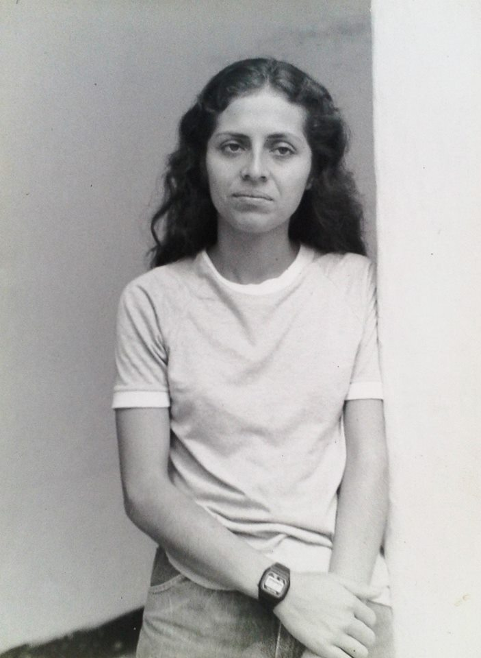
Aparte de esto, Chava, como le decían en su casa, vivía en una burbuja de absoluto desconocimiento, en una época en la que los libros y las artes eran para los ricos o para los rebeldes. “En mi casa no leían, no sabían qué era eso. Cuando yo entré al teatro, no sabía qué era un violín, qué era poesía. No conocía nada de eso, porque nosotros vivíamos en otro mundo […]. Es más, yo creo que conocí el teatro porque vi al Matacandelas […]. Mi familia nunca ha sido intelectual; ha sido una familia muy sencilla, muy campesina (risas)”.
Aunque pocos, los primeros contactos con la música y el teatro comenzaron a calar, tal vez de manera inconsciente, en esta niña rebelde y solitaria. Una madre danzaora y las inocentes puestas en escena escolares, iban marcando un rumbo importante para aquella que ninguna intención tenía de meterse en el cuento. “Me tocó hacer sociodramas y yo era la directora (risas), decía qué poníamos, qué no poníamos, cómo hacíamos. Es que yo conocí al Matacandelas por eso, porque estábamos en un centro literario y montamos una obra que se llamaba dizque, Farsa de la ignorancia y la intolerancia, un texto del dramaturgo Gustavo Andrade Rivera. Estábamos ensayando en el colegio, pero nos dimos cuenta de que en la Casa de la Cultura de Envigado había como un espaciecito donde podíamos ensayar mejor; como más calmadito y bien chévere. Entonces nos fuimos para allá”.
Y, como si todo hubiera estado cuidadosamente preparado por un misterio llamado destino, por allá resultó estar el naciente Colectivo Teatral Matacandelas, cofundado y dirigido por Cristóbal Peláez, otro envigadeño recién llegado de España, que empezaba su recorrido con un primer montaje: Qué cuento es vuestro cuento. “Yo vi esa obra y quedé impactada. Mejor dicho, quedé ocho días mal. Ocho días con esos textos en la cabeza, y me daban vueltas y vueltas”.
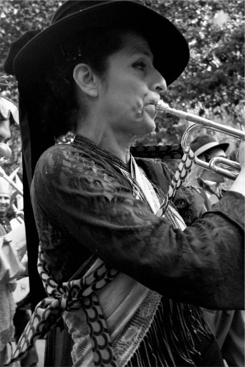
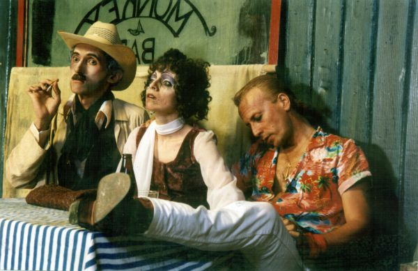
Una significativa apertura al mundo tenía lugar en la Casa de la Cultura de Envigado. Chava, de diecisiete años, encontraba en este grupo de teatro una posibilidad distinta al mundo sin novedades en el que vivía. Los cuestionamientos intelectuales comenzaron a gestarse a través de las letras de varios autores. “Recuerdo que era León de Greiff; León Felipe; había algo de García Márquez, muy bonito también; había de Mario Benedetti… Eran como pedazos de poesías, de cuentos pequeños escenificados, se iban juntando todos y había un juglar que los iba como uniendo […]. Esa forma de actuar a mí me dejo impactada, porque era tan real, que es algo que el Matacandelas todavía tiene: la relación entre el espectador y el actor”.
Pese a las inquietudes desatadas con Qué cuento es vuestro cuento, pertenecer al grupo no la desvelaba. El teatro era en aquella época —y aun hoy— una actividad revolucionaria; de locos y soñadores. Su llegada al Matacandelas fue, más bien, una forma de salir del desparche con una de sus amigas. Cansadas de tomar cerveza todos los fines de semana en el parque de Envigado, aceptaron la invitación de Cristóbal a hacer “gimnasia casi olímpica” —según Chava— con los integrantes del grupo. “Ensayaban de cinco a ocho, entonces fuimos. Tratamos de hacer lo que ellos hacían […], nos fueron explicando y enseñando. A mí me gustó mucho todo eso y yo me quedé. Y mi compañera se fue”, recuerda.
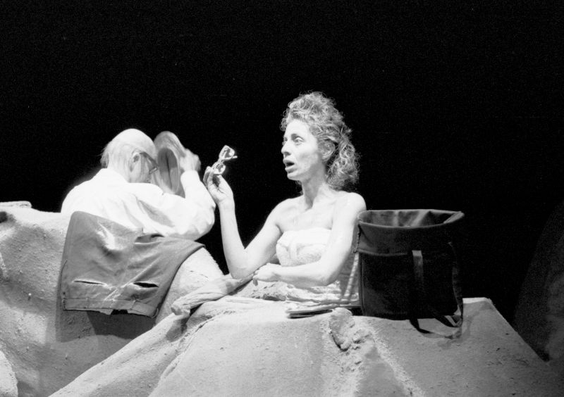
El pregón de la muerte en ruedas, de Jorge Zalamea Borda, sería la prueba de fuego para estrenarse como actriz. El rigor y la disciplina que tanto le atraían del grupo, no impedirían la aparición de ese poderoso temor escénico que, probablemente, invade a todo neófito teatral. “¡Yo lloré! Porque Cristóbal me decía, '¡Hable duro; con fuerza, con energía!'. Y uno no era capaz. Y me bregó y me bregó, y eso salió”.
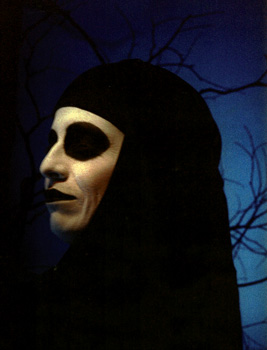
La imponente presencia del rock se convertía en el símbolo de la juventud ochentera, en la que bullía irreverencia y precocidad. La rebeldía permanente de Chava se alimentaba entonces con melodías estridentes y letras cargadas de inconformismo. Era la época de sexo, droga y rock & roll. “Los roqueros en esa época eran el símbolo más importante. La rebeldía eran ellos. Yo me mantenía en un bar de Envigado donde ponían rock […] se llamaba El Palomar, pero ya no existe. Y yo me iba pa'llá. Inclusive meseriaba, pero no [porque] me pagaban, sino por ayudarle al señor —porque eso se llenaba— y por estar ahí. Entonces me daba cerveza, y yo por una cerveza meseriaba. Y por la música, que era puro rock. Pero el problema del rock es que no llega sino hasta la borrachera”, comenta.
Entrar al Matacandelas suponía no solo un encuentro con el teatro; era un descubrimiento poético, literario y altamente ideológico. Los planteamientos marxistas permearon, durante los primeros años, el proceso creativo del grupo, haciendo eco en el carácter revolucionario de Chava. “Creíamos en una sociedad justa, donde no iba a haber ricos ni pobres, sino que todos íbamos a ser iguales […]. Yo lo creí en mi momento como una niña de cinco años cree en una cosa que le dice el papá […], nosotros creíamos que la revolución iba a ser a los dos o tres años, entonces estábamos trabajando para eso”. La mezcla entre poesía y teatro panfletario fue la línea de trabajo del Matacandelas durante ese período. Eran la parte artística inmersa en los anhelos de cambio.
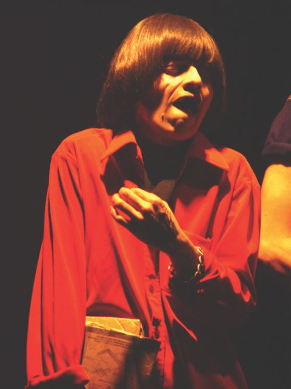
Aunque ahora tiene claro que ya no cree en los ideales que alguna vez determinaron su forma de concebir el mundo, Chava recuerda, con no poca emoción, esa época donde la revolución se introducía victoriosa y promisoria en todas las dimensiones de su vida. “Había por qué luchar, entonces uno quería luchar por algo […], todo eso estaba junto: era la poesía; era el teatro; eran mis camaradas tan formales, tan chéveres, tan especiales. Más una causa: estábamos metidos en un movimiento político. Un movimiento de izquierda que quería transformar el mundo. No solamente a Colombia, sino que la idea era el mundo entero. Hace treinta y cinco años (risas). Y mirá cómo vamos, ¡ay, no!”.
Con un golpe de desconcertante realismo, el espíritu revolucionario que alguna vez movió la pulsión creativa, se fue difuminando al ver que no llegaban las transformaciones esperadas. La consecución de la primera sede del Matacandelas, en la carrera Córdova —centro de Medellín—, representaba no solo una independencia espacial, sino un cambio radical en las temáticas que llevaban a escena. “Cuando ya tuvimos un escenario para nosotros, empezamos a explorar teatro, ya no tan social, tan comprometido; sino un teatro más poético, más filosófico. Y ahí empezaron a salir otro tipo de obras […]. Ya aquí vieron que la revolución no llegaba, que no había forma de tumbar el Gobierno (risas), tuvieron que empezar a buscar otras opciones. Entonces el teatro fue a donde debía estar”. Montajes como La zapatera prodigiosa, de Federico García Lorca; Viaje compartido, de Aguilera Garramuño y Andrés Caidedo; y O marinheiro, de Fernando Pessoa, se gestaron en este nuevo espacio.
Mientras conversamos, las inflexiones en su voz delatan el nivel de pasión que le produce cada tema. Pasa con facilidad de un tono suave y neutro, a uno fuerte, resonante y contundente. Los párpados levemente caídos se abren para dar lugar a unos ojos claros y expresivos, que se entornan cuando trata de recordar algún episodio importante, y brotan excitados cuando habla de su compañera infaltable: la música.
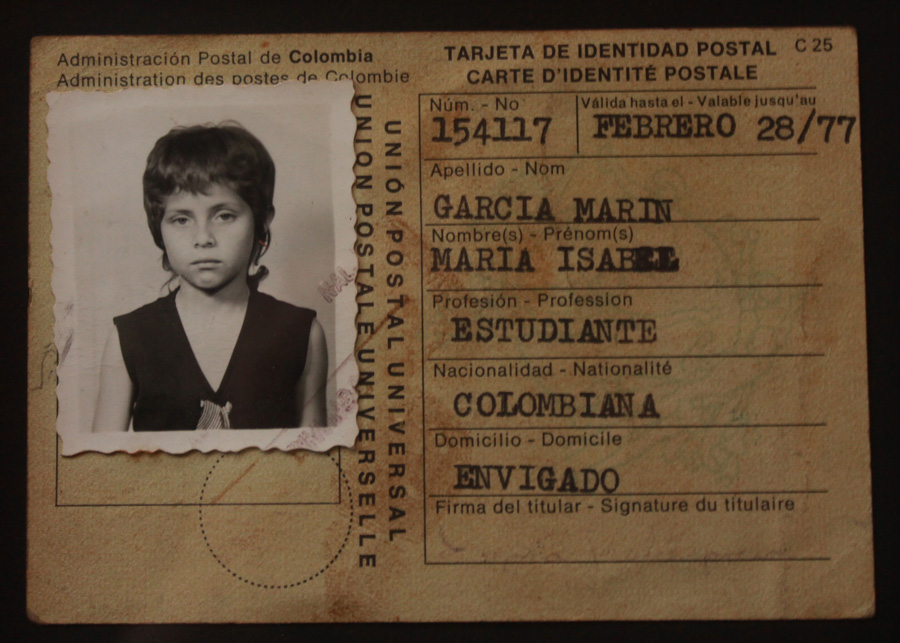
Lo que inicialmente era un requerimiento teatral que poco le atraía, es ahora una parte fundamental de su identidad. “La música empezó, primero, como una práctica disciplinaria y de aprendizaje […] pero, con el tiempo, la fui usando como un desahogo; como un modo de vida. Se me convirtió en una cosa que hacía parte de todo lo que yo era. Era tan especial que, cuando tenía problemas en el teatro con alguien, o peleaba, o me iba muy mal con un personaje, me ponía a estudiar. Y como que estudiaba y me calmaba”. La relación entre música y teatro constituye una dupla inseparable en el trabajo del Matacandelas. Para Chava, una melodía debe tener la capacidad de juzgar una escena o entrar en “un momento donde produzca una atmósfera, una tensión o una resolución. La música nos ayuda a ver otras posibilidades del teatro; que no se quede solamente en la representación, sino que sea intervenido, cuestionado […]”, enfatiza.
Durante este recorrido desordenado de historias y recuerdos, algunos nublados por las inevitables traiciones de la memoria, aparece un elemento conductor que construye perfectamente el perfil de esta actriz, a quien tantas veces he visto sobre un escenario, pero con la que, solo hoy, me he sentado a conversar durante casi cuatro horas… sobre un escenario. La disciplina ha sido, indudablemente, la materia prima que ha dado vida a personajes memorables como Winnie, en Los bellos días, de Samuel Beckett; Medea —en la obra que lleva el mismo nombre—, de Séneca, y Zenaida, en Juegos Nocturnos 1, de Jean Tardieu . “Lo de la disciplina siempre me ha gustado, yo creo que fue por mi mamá, que era tan estricta. Siempre me ha parecido maravilloso. Me ha gustado mucho la gente cumplida, lo que sí se hace; que no se queden cosas en planes […]”.
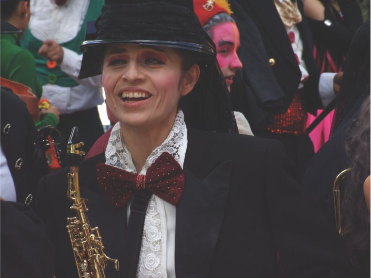
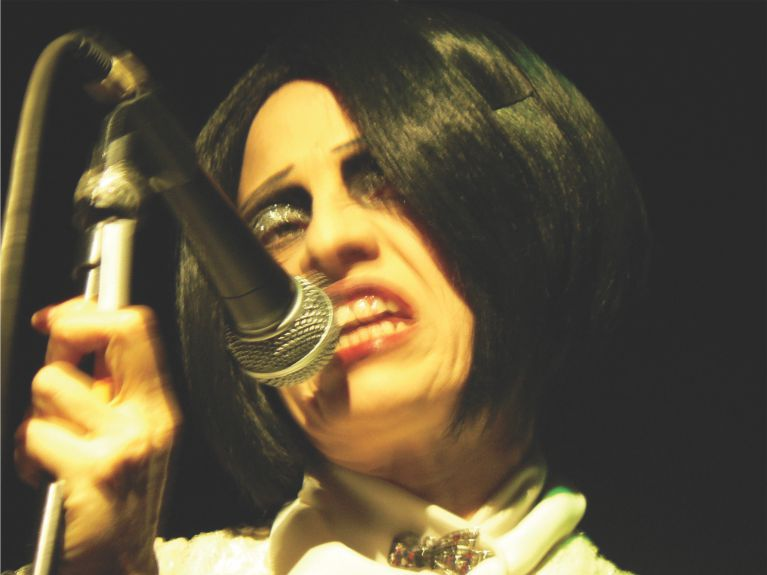
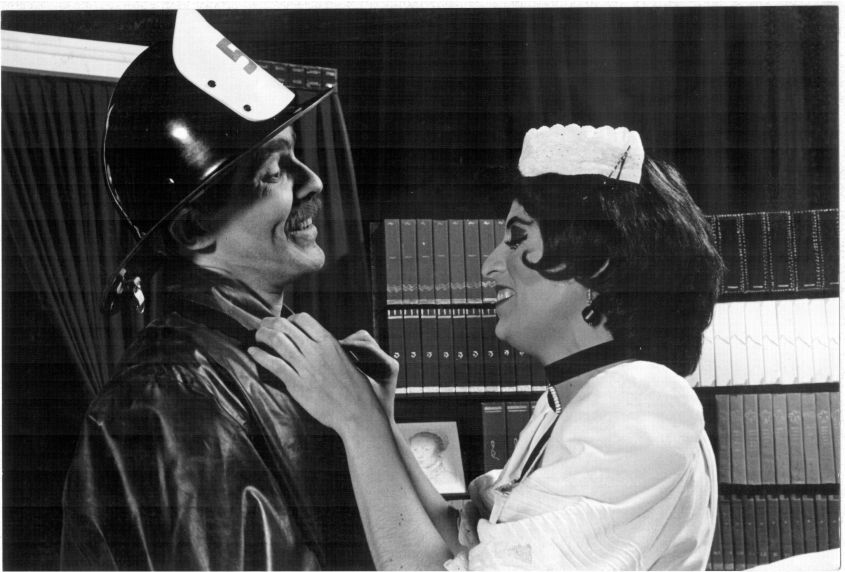
Risueña y pícara, como una niña confesando alguna travesura, admite que conserva cierta rebeldía en el escenario, que odia los esquemas y que le gusta “variar, variar y variar”. En otros términos, hacer lo que le dé la gana, sobre todo en los montajes que no son con Cristóbal. A Chava le aburren los personajes planos, los textos demasiado técnicos y la falta de rigurosidad en el proceso creativo. Por el contrario, la motivan los personajes complejos, con historia, con drama y con voz propia. Tal vez por eso tiene muy claro las exigencias de su interpretación. “El mejor tiempo es para la obra. Las mejores condiciones son para la obra. No me gusta dejar el teatro como de último y como lo que sobró del día […], es un principio personal. Yo he respetado tanto el teatro, que siempre le dejo la mejor parte […]. Para mí siempre ha sido un rito en ese sentido: en la disposición […], me gusta creer que eso es verdad y la trasescena es para mí importantísima, porque no me gusta desconectarme de la obra e irme a hablar bobadas. No. Estoy aquí y estoy allá en lo mismo. Me voy a orinar y estoy en el mismo cuento. Yo no estoy en otro lado, estoy es aquí, en lo que está sucediendo acá. Como si fuera verdad, como si fuera algo conectado […]. La trasescena también hace parte del teatro”.
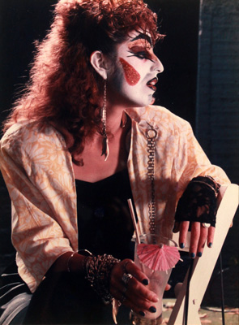
Más de tres décadas de creación colectiva con el Matacandelas, no dan mérito solo de una habilidad individual. El trabajo y la convivencia en un grupo de teatro constituyen un reto al que pocos se le miden. “Es increíble, pero nos entendemos más en el escenario que en la vida real (risita). En los momentos en los que hemos tenido más dificultades, en el escenario siempre hay conexión […]. Debe ser por la práctica constante, porque cuando un actor se presenta cada año, se pierden muchas cosas. Cuando hay una práctica constante, le produce ese tipo de conexiones”, afirma.
Como a cualquier actor consciente de la complejidad de su oficio, las búsquedas artísticas son igualmente una preocupación diaria. “Se han logrado cosas muy chéveres a nivel estético y organizativo […], estamos en [un] punto muy complicado porque ya nos toca inventarnos el mundo otra vez y uno no sabe a dónde iremos a dar […]; sería muy bueno lograr cambios bien especiales en la parte estética […], no quedarnos como en lo mismo; no casarnos con lo que ya sabemos […] es un punto difícil en la creación. Bastante difícil”.
Pese a la necesidad permanente de nuevas soluciones escénicas, para Chava la identidad teatral del grupo se conserva en cada uno de los montajes, independiente del autor y el género. “Yo veo, en casi todas las obras que hacemos, la obrita que vi de ellos hace treinta y cinco años […]. Qué cuento es vuestro cuento está en todas las obras: está el rigor, la poesía, esa necesidad filosófica de preguntarse qué está haciendo el hombre aquí, pa qué vinimos y qué somos nosotros. Está toda esa indagación […]. Ya de aquí pa adelante sí es el problema, porque pa dónde más se mueve uno, imagínate. De aquí pa adelante, nos empiezan a invadir los fantasmas de todo lo que hemos hecho”, reitera.
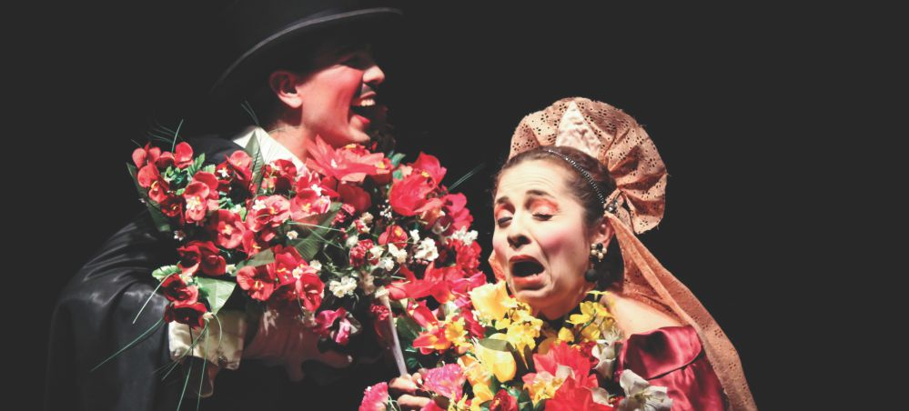
La idea de colectividad, aunque con ciertos cambios, también se ha mantenido. “Hay un ambiente familiar tan especial. La familia que yo encontré hace treinta y cinco años todavía subsiste, con variantes, claro […], pero subyace en el fondo esa hermandad que yo siempre he querido; que siempre estuve buscando”.
La formación antiacadémica del Matacandelas, más la libertad que ha buscado dentro y fuera del escenario, le han ido configurando una visión clara del oficio teatral y un diagnóstico de las propuestas que se están gestando. “A mí la academia me parece horrible, porque son muy técnicos y yo no soy técnica, entonces me da mucha dificultad […]; descuidan de una manera total la parte humana, ¡total! Allá no hay filosofía, allá no hay ideales, no hay cosas qué lograr, no hay cosas pa cambiar. Ellos creen que el actor es una máquina que bota texto y no es eso. Un actor tiene que tener cosas en su intelecto y en su vida; tiene que tener metas a nivel social, a nivel político y a nivel humano. Un actor no puede estar separado de la sociedad […] el incremento de salas y de grupos ha ayudado mucho a que se cree el público. […] Falta más búsqueda; falta mucha más experimentación […], se encierran en una estética como si fuera la única, y yo creo que hay muchas posibilidades […], se escogen unos textos y unas situaciones que no le están diciendo mucho a los espectadores. Los estamos mandando muy vacíos pa la casa. Estamos bajando la guardia”.
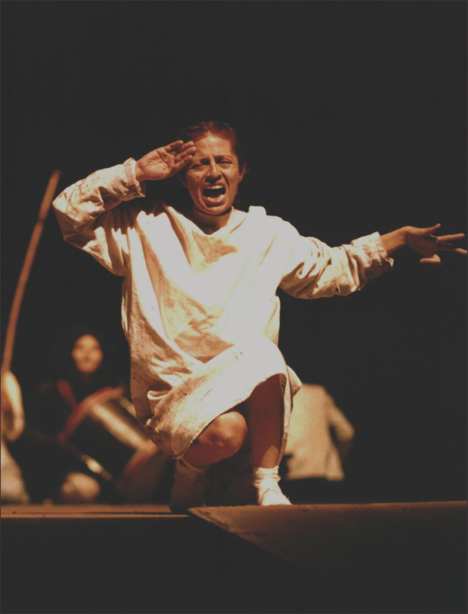
Contrario a los imaginarios que se tienen frente a la intensa vida social que se supone lleva un actor, la soledad y el silencio son para Chava las herramientas por excelencia para la preparación y la reflexión. Siempre que vaya a un almuerzo en Matacandelas, sabré que la voy a encontrar sentada, con sus audífonos puestos, en la silla del extremo de una barra que hay en la cocina. Sabré que, si no la veo a ella pero escucho la melodía de una trompeta, será Chava quien esté tocando. Y, cuando no la vea ni la escuche, pensaré que, calladita y concentrada, está preparando un nuevo personaje.
Obras
- Que cuento es vuestro cuento de Autores Varios (1979)
- La estatua de Pablo Anchoa de la Galería Salesiana (1979)
- Gritos para orientar un disparo de Jorge Zalamea Borda (1980)
- La comedia de Facundina, títeres (1980)
- El papá de Trina de Ciro Mendía (1981)
- Parte sin novedad de Augusto Boal (1983)
- Lux in tenebris de Bertolt Brecht (1983)
- Vía Pública de Cristóbal Peláez, teatro callejero (1984)
- Espantapájaros (1984)
- Recital de música Popular (1984)
- Cajon de muertos de Cristóbal Peláez (1985)
- Recital de música del renacimiento (1985)
- Recital de música Infantil (1986)
- Recital de Villancicos (1986)
- La Zapatera Prodigiosa de Federico García Lorca (1987)
- Titiritaina, títeres (1987)
- Viaje Compartido de Marco T. Aguilera Garramuño y Andrés Caicedo (1988)
- La cantante calva de Eugene Ionesco (1988)
- Lalolilalola, títeres (1988)
- Confesionario de Tennessee Williams (1989)
- Fiesta, títeres (1989)
- Chorrillo Sietevueltas, títeres (1990)
- O marinheiro de Fernando Pessoa (1990)
- El Astrólogo Coroconcholus, títeres (1991)
- Juegos nocturnos I de Jean Tardeau (1992)
- Perspectivas ulteriores de Franz Xavier Kroets (1992)
- Pinocho, títeres (1993)
- Angelitos empantanados de Andrés Caicedo (1995)
- Los diplomas de Andrés Caicedo (1997)
- Los bellos días de Samuel Beckett (1998)
- Doña Rosita la soltera de Federico García Lorca (1999)
- Hechizerias, títeres (1999)
- Paco Aguinaldo, infantil (1999)
- La chica que quería ser Dios, creación colectiva (2000)
- Diablitos de Nochebuena, infantil (2000)
- Los ciegos de Maurice Maeterlinck (2001)
- Medea de Lucio Anneo Seneca (2002)
- La princesa Katyuska, infantil (2002)
- La hechicera Mandarina, títeres (2003)
- Juegos nocturnos 2 - Velada ´Patafisica de Alfred Jarry (2004)
- Fiesta en el Bosque (con lobo al fondo) (2004)
- El hada y el cartero, títeres (2005)
- El pozo de los deseos, infantil (2005)
- El Rey Rabietas, infantil (2006)
- Fernando González velada metafísica, creación colectiva (2007)
- La caída de la casa Usher de Edgar Allan Poe (2007)
- 4 Mujeres de Edgar Allan Poe (2008)
- Dicha y desdicha de la niña Conchita, infantil (2008)
- El oscuro alimento de Carlos Vásquez (2010)
- Poemas ilustrados de Jaime Jaramillo Escobar (2010)
- El Mediumuerto de Jose Domingo Garzón (2010)
- La bella durmiente, infantil (2010)
- Las danzas privadas de Jorge Holguín Uribe (2011)
- Cenicienta, infantil (2011)
- La bella y la bestia, infantil (2012)
- Ego Scriptor de Luigi Maria Musati (2013)
- Blanca Nieves, infantil (2014)